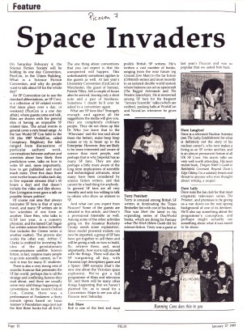
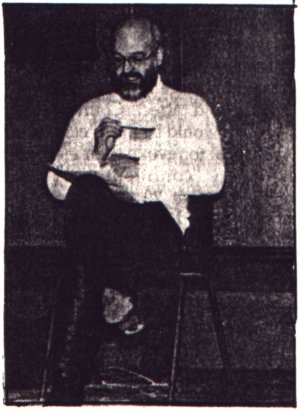
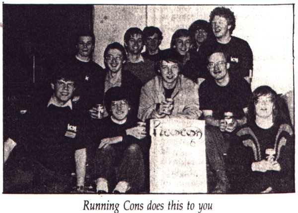

Space Invaders
Picocon 7
An article advertising Picocon 7, which appeared in Felix p.12, on 27th January 1989
On Saturday February 4, the Science Fiction Society will be holding its one day Convention, PicoCon, in the Union Building. What is a Science Fiction Convention, and why do people want to talk about SF for the whole day?
An SF Convention (or to use the standard abbreviations, an SF Con) is a collection of SF related events that takes place over a day, or weekend (PicoCon is a one day affair), where guests come and talk, films are shown with the general idea of having an enjoyable SF related time. The actual events in general cover a very broad range. At the last World SF Con held in the UK (the 1987 WorldCon, called Conspiracy, Brighton), the talks ranged from discussions of particular authors' work, conversations between authors and scientists about how likely their predictions were, talks on how to write SF and, more importantly, how to get published and much much more. Over five days there were twelve hours of talks each day in five separate streams (that's 60 hours a day) and that doesn't include the video and film shows. Ken Livingston even gave a talk on possible future politics!
Of course one area that always fascinates SF fans is that of space travel, and many SF writers are in fact scientists of one form or another. Dave Brin, who talks to ICSF last year, is a cometary physicist, and the famed Carl Sagan has written science fiction (whether that includes the Cosmos series is another matter). The process also works the other way; Arthur C Clarke is credited for inventing the idea of the geostationary communications satellite. Science fiction, in fact, inspires many people to go into scientific careers, as I'm sure is true for many IC students.
There is also a very strong vein of anarchic humour that permeates the SF fan world, perhaps due to all the strange and conflicting futures they read about, and there are usually some very odd things happening at conventions. At the recent Oxford Con, Conine, there was a performance of Fundament a thirty minute opera based on Isaac Asimov's Foundation saga (not just the first three books but all five!).
The one thing about conventions that you can expect is that the unexpected will happen. This unfortunately sometimes applies to the guests as well. At last year's University Convention (UniCon) in Winchester, the guest of honour, Patrick Tilley, left a couple of hours after he arrived, leaving only a short note and a pair of bootlaces. Somehow I doubt he'll ever be asked to a convention again.
What are SF fans like? Strangely enough, and against all the suggestions the media will give you, they are completely ordinary people. They do not dress up like Dr Who (we leave that to the 'Whovians' and the less said about them the better), make beep beep noises or try to beam up to the Enterprise. However, they are likely to be more interested and aware of science than most people, and perhaps that is why Imperial has so many SF fans. They are also perhaps a little more aware of the long term inmplications of scientific and technological advances, since many have been considered by science fiction writers, and that cannot be a bad thing for anybody. In general SF fans are all very friendly and only too willing to talk to others who show an interest in SF.
And what can you expect from Picocon? Some of the guests are detailed in this article, and there's a provisional timetable as well. Among some of the other activities going on, the Amateur Rocketry Group needs some explanation. Since model powered rockets can now be imported, a group of SF fans have got together to sell them and will be giving a talk on how to build, fly, retrieve them, and, most importantly, how not to kill yourself with the things. There will also be SF wargaming all day, with Paranoia (apt description) game and a Space: 1889 scenario (that's the new one about the Victorian space explorers). We've got a full programme of films and television SF, and there will be many other things happening that we haven't planned for, as is usual for a Convention. Hope to see you all at Picocon next Saturday.
Bob Shaw
Bob is one of the best and most prolific British SF writers. He's written a vast number of books, ranging from the near future (eg Ground Zero Man) to the far future (Orbitsville series) and most recently to an isolated double world system where balloons can act as spacecraft (The Ragged Astronauts and The Wooden Spaceships). He is renowned among SF fans for his frequent 'Serious Scientific' talks (which are neither), packing halls at WorldCon and NovaCon whenever he gives one.

Terry Pratchett
Terry is unusual among British SF writers in dominating the Times Bestseller list with one of his books. This was Mort the latest in his expanding series of DiscWorld books, which are doing for Fantasy what The Hitch Hikers Guide did for science fiction. Terry was a guest at last year's Picocon and was so popular that we asked him back.

Dave Langford
Dave is a reformed Nuclear Scientist (see The Leaky Establishment for what is definitely not the story of his nuclear career!) who now makes a living as an SF writer and fan, and is an almost permanent fixture at all UK SF Cons. His manic talks are very well worth attending. His most recent book, Dragon Hiker's Guide to Battlefield Covenant Beyond Dune's Edge Odessy 2 is a salutary lesson and threat to anyone who ever thought about writing a sequel.
Dave Lally
Dave runs the fan club for that most enigmatic television series The Prisoner, and promises to be giving us a run down on the real spying background of one of its devisers. He'll also say something about the programme's conception, and perhaps might actually say something about what it was meant to be about.
